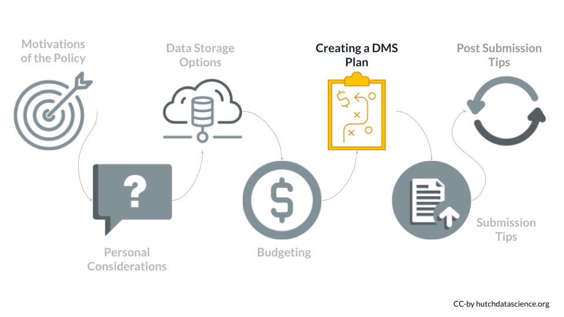
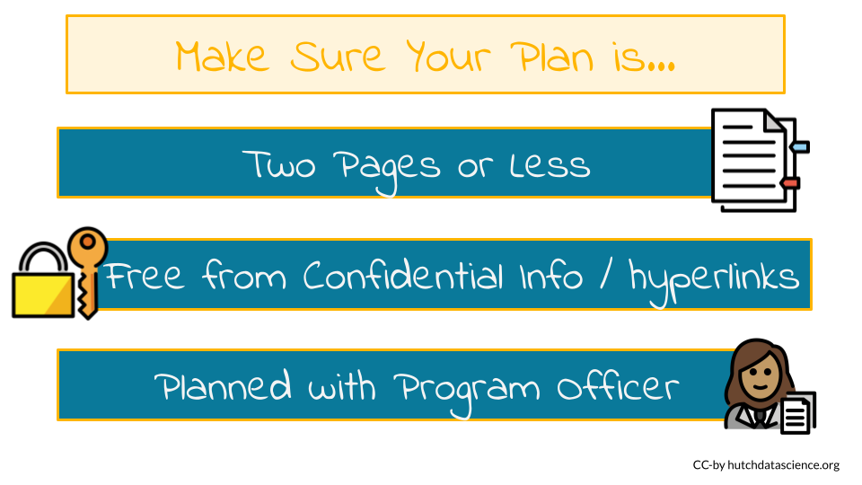

Chapter 6 Writing a DMS Plan
In this section we will guide you through the requirements for the various sections of the DMS plan. It is important to note that it is possible to change your DMS plan after submission. Changes can occur during the Just-in-Time process or during regular reporting intervals. Thus you need to initially show that you made a plan but it’s OK if things change.

It is important to note that it is possible to change your DMS plan. Changes can occur during the Just-in-Time process or during regular reporting intervals. Thus you need to initially show that you made a plan, but it’s OK if things change.
In addition, you may want to consider potential ethical considerations for your data management and sharing plans, see the ethics section of the appendix.
6.1 Plan Sections
These following are the major sections of the plan:
- Data type - describe what data (amount and type) will be generated over the course of funding and what data will or will not be shared
- Tools, software, and code - describe in what tools you intend to use to manage and analyze the data (note code is not required to be shared)
- Standards - describe any standards that you might need to use for your data and metadata to make them usable by others or be contributed to a repository
- Data preservation, access, timelines - describe where the data will be made available and when
- Access, distribution, reuse considerations - describe how you have carefully considered any reasons that might limit sharing
- Oversight - describe who will manage compliance of the DMS plan
6.2 General Requirements
☑️ The plan must be less than 2 pages.
- Follow margin and font formatting restrictions consistent with the rest of the proposal.
☑️ Nothing confidential or proprietary is in your plan.
- Initially DMS plans will not be made public, but they may be made public in the future.
You are encouraged to talk to the appropriate Program Officer for your respective funding announcement about your plan before you submit your grant proposal.
- Keep in mind that your DMS plan will not be reviewed by reviewers, only the budget sections in regard to this will be seen by them. Instead the Program Officer will review your DMS plan to determine if it is reasonable and appropriate or if you need to make changes.

6.3 Data Type
6.3.1 Types and amount data
☑️ Describe what kind of data will be generated over the course of funding.
☑️ Describe the expected amounts of data for each kind of data.
☑️ Describe the expected levels of aggregation (individual, aggregated, summarized) for each kind of data.
☑️ Describe the expected degree of processing of data for each kind of data.
6.3.2 Data Sharing
☑️ Describe what data from the project will shared or not shared and justify this decision.
For additional information about potential ethical considerations of sharing your data, see the ethics section of the appendix.
6.3.3 Metadata, other relevant data, and associated documentation
☑️ List information about metadata.
☑️ List other possibly relevant data.
- This includes data you think is not considered scientific.
☑️ List any relevant information about how you plan to gather the data.
- For example, this could include study protocols and data collection instruments that you plan to share to make it easier for others to reproduce your work.
6.5 Standards
☑️ Describe the names of any data standards that will be used for your data/metadata to enable easier sharing are repeated use of your data.
- This could include:
- data formats
- metadata schemas
- content/encoding standards
- standard terminologies
- common data elements
- data dictionaries
- data identifiers
- definitions
- unique identifiers
- other data documentation
☑️ Describe how these standards will be applied to your data.
☑️ If no standards exist, justify this.
Data Standard
An agreed upon set of rules that allow information to be shared and processed in a uniform and consistent manner. This includes representations, formats, and definitions of data.
Standards vary by discipline. An extensive list of standards you can search can be found here. An example standard is the MIAME reporting guideline for microarray experiments.
Keep in mind that there may be important ethical considerations when it comes to data standards, see the ethics section on standards of the appendix.
6.6 Repositories and Timelines
Researchers are expected to try to maximize data sharing while still respecting sharing limitations or restrictions. See the next section if you feel that you have limitations for sharing your data.
6.6.2 Methods to make scientific data findable and identifiable
☑️ Describe what you will do to make the data more findable and identifiable.
- For example, you could use a persistent unique identifier (PID) or other standard indexing tool. Zenodo can be a useful option for creating digital object identifiers (DOIs).
6.6.3 Timeline of scientific data sharing
☑️ Describe when the scientific data will be made available to others.
- Recall that data must be shared no later than the time of publication of findings or the end of the award (whatever comes first), however the NIH encourages th the data be shared as early as possible.
- Renewals can have an updated DMS plan with a different timeline, but if not approved must use previous DMS date.
- No cost extension also allows for more time.
- NIH encourages that data be made available as early as possible.
☑️ Describe how long data will be available to others.
- There is no requirement for how long need to be available, however, note that journals may have requirements and the NIH encourages that data be made available for as long as the data is anticipated to be useful. Furthermore, Per Section 8.4.2 of the NIH Grants Policy Statement, grantee institutions are required to keep data for 3 years following closeout of a grant or contract agreement. Additionally, specific awards may have their own requirements.
☑️ Describe any differences in timelines for different datasets.
6.7 Access and Reuse Considerations
Describe how you considered various factors that may influence data access or hinder your ability to share the data including:
☑️ Describe type of informed consent was used or will be used to gather the data.
- NIH expects informed consent for de-identified cell lines or clinical specimens as well (even if the research does not meet the definition of “human subjects research” under the Common Rule for all data derived from such specimens after January 25th, 2015, the effective date of the GDS policy.
☑️ Describe if access to data related to human subjects will be controlled and how the privacy, rights and confidentiality of these participants will be protected (for example, de-identification methods).
☑️ Ensure privacy and confidentiality protections consistent with applicable federal, Tribal, state, and local laws, regulations, and policies.
☑️ Describe any restrictions imposed by federal, Tribal, or state laws, regulations, or policies, or existing or anticipated agreements
☑️ Describe any other relevant data sharing policies.
An example could be the Genomic Data Sharing (GDS) policy.
If indeed the data requires compliance with the GDS policy, researchers should indicate if the study should be designated as “sensitive”.
☑️ Describe any reasons that will limit data sharing (including legal, ethical, or technical concerns, as well as Institutional Certification limitations). Other sharing limitations:
This could be because datasets cannot practically be digitized with reasonable efforts, or that privacy or safety of research participants would be compromised or place them at greater risk of re-identification.
If data cannot be shared due to an Institutional Certification criteria, for example, the data cannot be shared as expected by the GDS policy. Researchers should include this information in their DMS plan and explain why the element cannot be met.
☑️ Describe any consideration for embargo periods or access controls if there are intellectual property concerns, rather than refraining from sharing altogether
Keep in mind that there may be important ethical considerations when it comes to sharing data based on the consent process, see the ethics consent section of the appendix. In addition, de-identification can be a tricky process, see the ethics section for more information about that as well.
6.8 Oversight
☑️ Describe who will manage compliance with the DMS plan (include names, titles and roles of all individuals involved).
☑️ Describe how compliance will be monitored (including frequency of oversight, for example every 3 months).